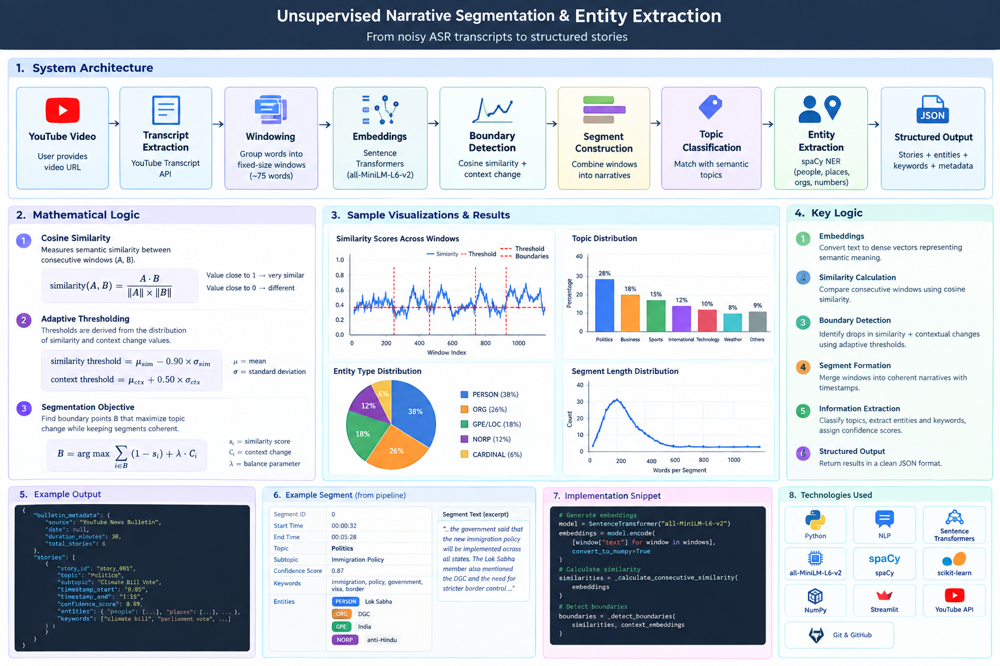

1. Introduction
Understanding the problem and the motivation behind the project.
Project Overview
News videos often contain multiple stories within a single long video. When subtitles are automatically generated using Automatic Speech Recognition (ASR), the resulting transcript can contain spelling errors, missing punctuation, fragmented sentences, repeated words, and incorrect entity names.
This project develops an unsupervised NLP pipeline that identifies narrative boundaries in such transcripts and converts the resulting segments into structured information.
The system combines semantic embeddings, cosine similarity, contextual change detection, spaCy Named Entity Recognition, semantic topic classification, keyword extraction, and heuristic confidence estimation.
Problem Statement
Given a long and noisy ASR-generated transcript, automatically identify meaningful narrative segments without requiring manually labelled segmentation data.
Goal
Produce a structured JSON representation containing individual stories, timestamps, topics, entities, keywords, and confidence information.
2. Project Presentation
Complete explanation and demonstration of the project.
The presentation video will demonstrate the complete pipeline, explain the core logic, and show the system running on transcript data.
3. System Architecture
From raw YouTube video to structured narrative information.

YouTube Video
User provides a YouTube video URL.
Transcript Extraction
Transcript snippets and timestamps are obtained through the YouTube Transcript API.
Transcript Windowing
The transcript is divided into fixed-size semantic processing windows.
Sentence Embeddings
Each window is converted into a dense semantic vector using Sentence Transformers.
Boundary Detection
Semantic similarity and contextual changes are used to identify potential story boundaries.
Segment Construction
Windows are combined into timestamped narrative segments.
Topic Classification
Segments are matched against semantic topic descriptions.
Entity Extraction
People, places, organizations and numbers are extracted using spaCy NER.
Structured Output
Results are converted into structured JSON and displayed through the application.
4. Methodology
How the complete NLP pipeline works.
Transcript Extraction
The system accepts a YouTube video ID and retrieves the available transcript using the YouTube Transcript API. Each transcript snippet contains text, start time, and duration.
Semantic Windowing
Instead of processing thousands of tiny ASR snippets independently, consecutive transcript words are grouped into windows of approximately 75 words. Timestamp information is preserved.
Text Embeddings
Each window is converted into a numerical vector using the all-MiniLM-L6-v2 Sentence Transformer. Similar meanings produce vectors that are close together in embedding space.
Semantic Similarity
Consecutive windows are compared using cosine similarity. A large drop in semantic similarity can indicate a transition from one story to another.
Contextual Change Detection
The system also compares broader surrounding contexts rather than relying only on adjacent windows. This helps identify stronger topic transitions.
Adaptive Boundary Selection
Statistical properties of the similarity values are used to determine candidate boundaries. Minimum-distance constraints reduce excessive segmentation, while maximum segment length prevents extremely long segments.
Segment Construction
Detected boundaries are used to combine windows into complete narrative segments while preserving their start and end timestamps.
Topic Classification
Each segment is semantically compared against predefined topic descriptions such as Politics, Sports, Weather, Technology, Business and International News.
Named Entity Recognition
spaCy's English NER model identifies entities including people, places, organizations and numerical information.
Keyword Extraction
Important nouns, proper nouns and adjectives are selected to create a concise keyword representation for each segment.
Structured JSON Output
All extracted information is combined into a structured JSON format containing bulletin metadata, story information, entities, keywords and segmentation quality information.
5. Mathematical Logic
The main mathematical ideas behind semantic segmentation.
Cosine Similarity
Each transcript window is represented by an embedding vector. Cosine similarity measures how similar two vectors are based on the angle between them.
A value closer to 1 indicates greater semantic similarity, while a lower value indicates that the two windows are less semantically related.
Similarity-Based Boundary Detection
For consecutive transcript windows, the pipeline calculates a sequence of similarity values:
A significant reduction in similarity can indicate a possible transition between narratives.
The implementation smooths similarity values and combines local similarity with broader contextual change. Statistical thresholds are then used to identify candidate boundaries.
Adaptive Thresholding
Instead of using one arbitrary similarity value for every transcript, the system derives thresholds from the distribution of similarity scores within the input.
This makes the segmentation decision dependent on the characteristics of the current transcript.
6. Data Exploration & Results
Observed characteristics of the processed transcript.
Observations
- The source transcript contained a very large number of short ASR-generated snippets.
- Consecutive snippets frequently overlapped in their semantic content.
- Fixed-size semantic windows reduced the fragmentation caused by processing every ASR snippet independently.
- Embeddings allowed semantic relationships to be measured even when exact words differed because of ASR errors.
- The number of final narrative segments depends on the input transcript and the detected semantic boundaries.
Example Structured Output
7. Core Implementation
Important components of the Python pipeline.
Embedding Generation
The Sentence Transformer converts each text window into a fixed-dimensional semantic representation. These representations are then used for similarity calculations.
Narrative Boundary Detection
The implementation combines local semantic similarity, smoothed similarity trends and broader contextual changes before selecting candidate boundaries.
Entity Extraction
spaCy's Named Entity Recognition identifies important entities from each narrative segment.
Final Pipeline Function
This function acts as the main orchestration layer, connecting transcript extraction, segmentation, information extraction and final output generation.
8. Application Interface
Interactive demonstration using Streamlit.
Streamlit Application
A Streamlit interface provides a simple way to run the complete pipeline without interacting directly with the Python functions.
The user enters a YouTube URL and selects Analyze Video. The application then displays the extracted stories, timestamps, topics, confidence scores, transcript text, entities and keywords.
9. Technologies & Skills
Tools and concepts used throughout the project.
10. Design Decisions
Why the project uses this approach.
Why Unsupervised?
Manual story-boundary labels are expensive to create. An unsupervised approach allows the system to identify potential narrative transitions directly from semantic relationships in the transcript.
Why Embeddings?
Exact word matching is unreliable for noisy ASR text. Embeddings provide a semantic representation that can capture related meaning even when the wording differs.
Why Multiple Signals?
A single similarity score can produce false boundaries. Combining local similarity, smoothing and contextual change provides a stronger segmentation signal.
Why Modular Design?
Separating extraction, windowing, embedding, segmentation and entity extraction makes the pipeline easier to test, debug and extend.
11. Limitations & Future Improvements
Known limitations and possible production improvements.
Current Limitations
- ASR errors can affect semantic segmentation and NER.
- Boundary detection depends on heuristic parameters.
- spaCy NER may produce incorrect or incomplete entities for noisy transcripts.
- Confidence scores are heuristic and are not calibrated probabilities.
- The current system does not use manually labelled ground-truth boundaries for quantitative evaluation.
Future Improvements
- Evaluate against a manually annotated benchmark.
- Tune segmentation parameters using validation data.
- Use stronger or domain-specific embedding models.
- Add ASR correction or normalization before NER.
- Introduce better topic and subtopic modelling.
- Add automated evaluation metrics such as boundary precision, recall and F1.
12. Project Structure
Organisation of the GitHub repository.
13. Project Guidance
Academic and mentorship information.
Parth Dhola
Amaan Irfan Sir
Prof. Prithwijit Guha
14. Project Repository
Source code, notebooks and documentation.
Unsupervised Narrative Segmentation & Entity Extraction
The complete implementation is available on GitHub.